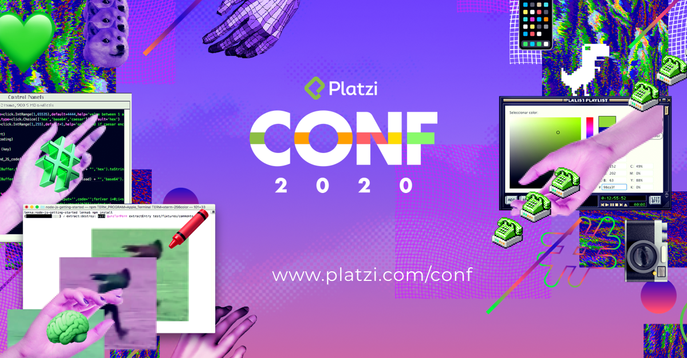

NextBlog
Tu blog de cabecera.
NextBlog
Tu blog de cabecera.
Aquí inicia la historia de una gran proyecto.
Y este es el párrafo de inicio donde vamos a explicar las cosas increíbles que se pueden hacer con ramas de Git.

Los blogs son la mejor forma de compartir información y tus ideas. Mucho más que ir a conferencias o salir en Youtube. Excepto si eres un rockstar. Pero estadisticamente no lo eres por ahora.
Suscribete y dale like!